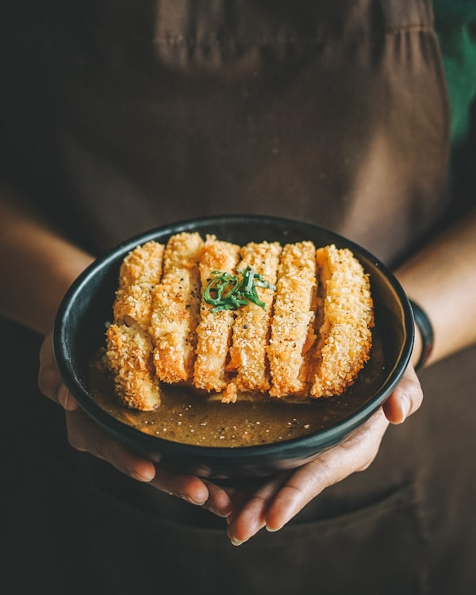
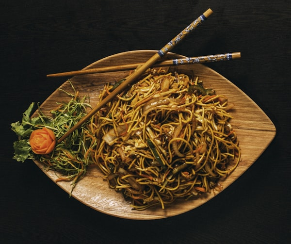

FROM OUR KITCHEN
Featured Recipes
View All Recipes →
● Easy
MAIN DISHES
Chicken Adobo
The national dish. Bold, tangy, and deeply savory.
⏱ 30 mins
🔥 4 servings

● MEDIUM
SOUPS
Sinigang na Baboy
A sour tamarind broth that warms the soul.
⏱ 30 mins
🔥 4 servings

● HARD
MAIN DISHES
Kare-Kare
Peanut stew royalty - rich, golden, unforgettable
⏱ 3 HR
🔥 6 servings

● Easy
MAIN DISHES
Pancit Canton
Stir-fried noodles for long life and good fortune.
⏱ 30 MIN
🔥 6 servings